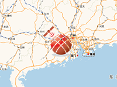

Example of how to dynamically create a 2D marker in the GPS locations of user.
Requirement: Online Maps Location Service component
Usage instructions:
Add Location Service Component.
Add this script to map GameObject.
Add Location Service Component.
Add this script to map GameObject.
Marker_GPS_Example.cs
/* INFINITY CODE 2013-2016 */
/* http://www.infinity-code.com */
using UnityEngine;
namespace InfinityCode.OnlineMapsExamples
{
[AddComponentMenu("Infinity Code/Online Maps/Examples (API Usage)/Marker_GPS_Example")]
public class Marker_GPS_Example : MonoBehaviour
{
// Marker, which should display the location.
private OnlineMapsMarker playerMarker;
private void Start()
{
// Create a new marker.
playerMarker = OnlineMaps.instance.AddMarker(new Vector2(0, 0), null, "Player");
// Get instance of LocationService.
OnlineMapsLocationService locationService = OnlineMapsLocationService.instance;
if (locationService == null)
{
Debug.LogError(
"Location Service not found.\nAdd Location Service Component (Component / Infinity Code / Online Maps / Plugins / Location Service).");
return;
}
// Subscribe to the change location event.
locationService.OnLocationChanged += OnLocationChanged;
}
// When the location has changed
private void OnLocationChanged(Vector2 position)
{
// Change the position of the marker.
playerMarker.position = position;
// Redraw map.
OnlineMaps.instance.Redraw();
}
}
}